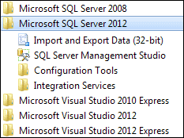
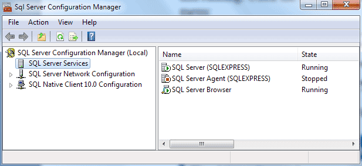

SQL Server Express and C# .NET
In this section, you'll learn how to create a database with SQL Server Express. You can do all this within the Visual C# .NET software. Once you have a database, you'll learn how to pull records from it, and display them on a Windows Form. You will also learn how to navigate through the records in your database, and how to add new records.
What is SQL Server Express?
SQL Server Express is database system from Microsoft. It's the stripped down version of SQL Server, which is used by a lot of big businesses around the world. Fortunately, Microsoft have made the Express Edition a free download.
Hopefully, you downloaded SQL Server Express with the Visual C# .NET Express Edition. If you did, you should see this somewhere on your start menu:

If you can't see the SQL Server Express entry, then you may need to download it. At the time of writing, the download location is here on the Microsoft site:
http://www.microsoft.com/sqlserver/en/us/editions/2012-editions/express.aspx
The SQL Server Management Studio Express you can see in the image above is a separate download, and is piece of software that lets you create and manage your databases without starting up your Visual C# .NET software. You don't need to download it for this book. But if you want to grab it, go to the Microsoft site and type "SQL Server Management Studio Express" into the search box.
Once you have downloaded and installed SQL Server Express, make sure it's up and running. Click the Configuration Tools menu above then the SQL Server Configuration Manager item. You should see a window appear:

In the right pane, make sure the State for both says Running. If not, right click and select Start from the menu. You can then close the Configuration Manager.